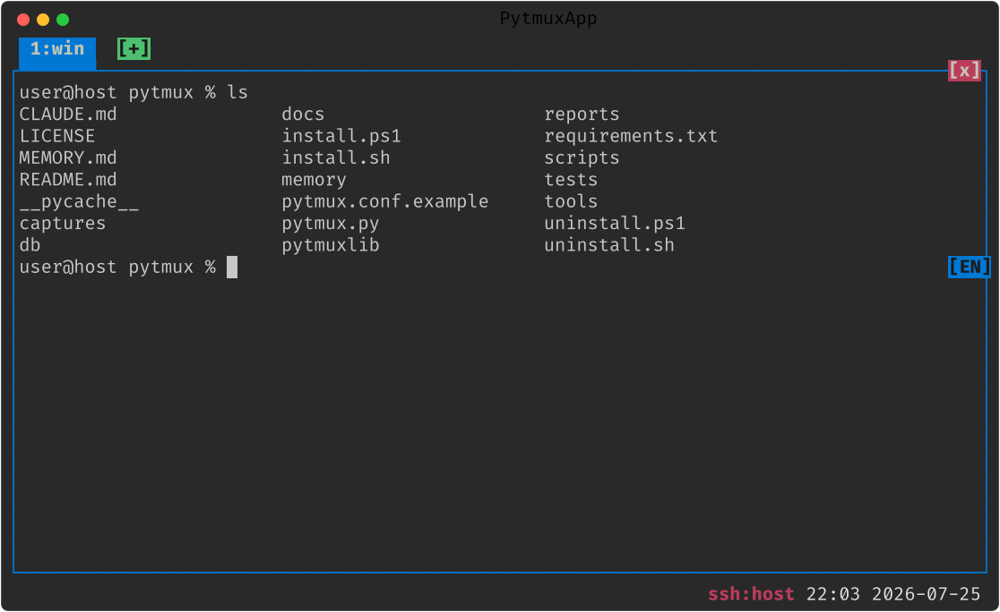

설치
파이썬만 있으면 됩니다. 설치는 한 줄, 실행도 한 줄입니다.
의존성 설치
Python 3.11 이상을 권장합니다. 저장소의 requirements.txt 로 한 번에 설치합니다
(직접 설치는 pip install textual pyte wcwidth,
Windows 는 pip install pywinpty 도 추가).
pip install -r requirements.txt
필요한 구성요소가 빠진 채 실행하면, pytmux 는 알 수 없는 오류 대신 빠진 구성요소
이름과 지금 쓰는 파이썬에 맞춘 설치 명령을 알려 주고 종료합니다.
실행
서버가 없으면 자동으로 기동한 뒤 attach 합니다. 이미 서버가 떠 있으면 바로 붙습니다.
python3 pytmux.py

pytmux 명령으로 등록 (선택)
래퍼를 ~/.local/bin 에 설치하면 어디서든 pytmux 로 호출할 수 있습니다.
인자로 다른 디렉터리를, BIN=pt 로 다른 이름(pt)을 지정할 수 있습니다.
macOS · Linux — 설치 / 제거
./install.sh
./install.sh /usr/local/bin
BIN=pt ./install.sh
./uninstall.sh
Windows (PowerShell) — 설치 / 제거
.\install.ps1
.\uninstall.ps1
등록 후에는 외부 셸에서 서버를 조작할 수도 있습니다.
pytmux
pytmux ls
pytmux cmd new-tab
pytmux 는 attach(없으면 기동), pytmux ls 는 탭/패널 요약, pytmux cmd <명령> 은 외부에서 서버에 명령을 보냅니다.
SSH · mosh 접속 시 자동 attach (선택)
원격 로그인하면 곧바로 pytmux 세션으로 들어가도록 ~/.zshrc 등 로그인 셸 설정에
추가합니다. 인터랙티브 SSH/mosh 로그인일 때만 attach 하도록 중첩 방지 가드를 둡니다.
if command -v pytmux >/dev/null && [[ -o interactive ]] && [[ -t 1 ]] \
&& [[ -z "$PYTMUX" ]] && [[ -z "$LC_PYTMUX" ]] \
&& [[ -n "$SSH_CONNECTION$SSH_TTY" ]]; then
pytmux
fi
주의:
exec pytmux 는 권하지 않습니다. pytmux 가 즉시 종료하면
로그인 셸이 함께 죽고, autossh 등과 만나면 재접속 루프가 됩니다.